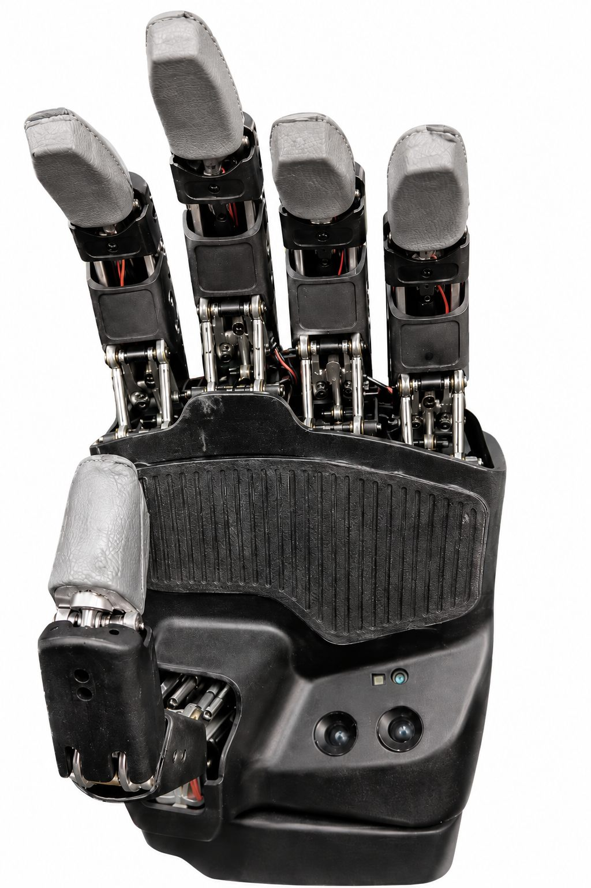
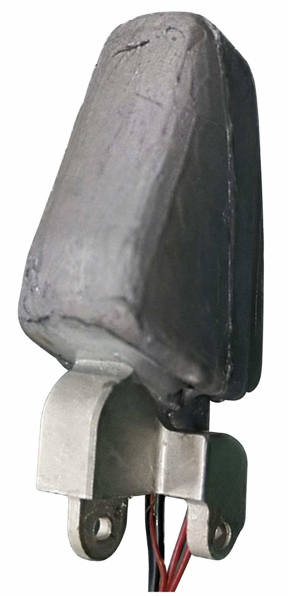

Five-Finger Dexterous Hand
A five-finger robotic hand prototype with integrated tactile sensor modules for hardware validation.
Role: tactile module integration, hardware assembly support, and prototype validation.


A five-finger robotic hand prototype with integrated tactile sensor modules for hardware validation.
Role: tactile module integration, hardware assembly support, and prototype validation.

